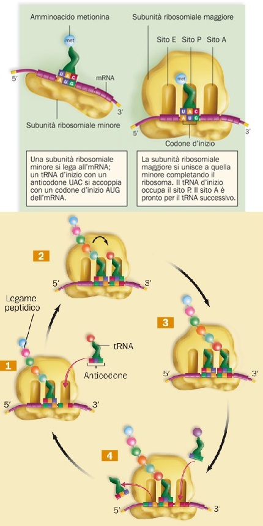

Scienze
Trascrizione mRNA

Il processo di traduzione nominato anche come sintesi delle proteine è il processo biochimico attraverso il quale
l'informazione genetica contenuta nel mRNA viene convertita in proteine.
Nei ribosomi sono presenti tre siti di attacco per i tRNA.
La prima fase è detta "inizio" ed è la fase che mette insieme tutti i componenti necessari alla traduzione.
Durante l'allungamento, un secondo tRNA associato al proprio amminoacido va ad ocupare il sito A del ribosoma.
Una volta che il tRNA successivo si aggancia al sito A, si forma un legame polipeptidico tra i due amminoacidi portati dalle molecole del tRNA
inserite nel ribosoma; contemporaneamente si spezza il legame tra il primo amminoacido e il suo tRNA.
Poi, avviene la traslocazione: l'mRNA si sposta in avanti, in modo che il tRNA che porta agganciato il peptide si trova ora al sito P del ribosoma.
Infine, il tRNA usato fuoriesce dal sito E.